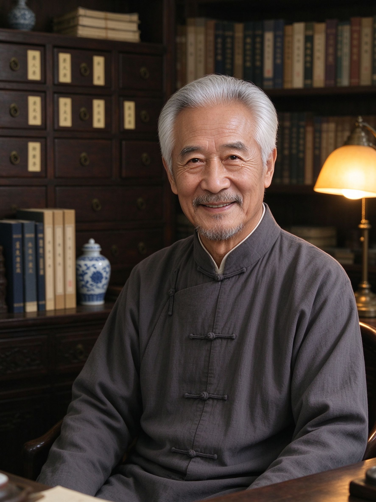

医者仁心
大医精诚
X老深耕中医临床与学术研究数十载，以辨证论治为本，以患者安康为念。这里是他的学术道场——风采、学术、心得与患者寄语，皆在此处；更有 AI 健康助手 7×24 在线，随时为您的健康答疑。
医道生涯，风采常在仁心
从初入医门到悬壶济世，数十载光阴沉淀为一方诊室、一册医案与一颗始终如一的仁心。

X老 · 中医传承工作室X老，中医临床与学术研究者
X老一生行医，以中医内科与体质调理见长，尤重「治未病」与慢病调养。主张辨证论治、以人为本，用药轻灵、配伍严谨，视患者如亲，深受患者信赖。行医之余，X老勤于笔耕与讲学，将医案与心得整理成文，愿以毕生所学传承后学、惠及众人。
此站为X老学术与患者服务的数字化道场：以AI健康助手为「知识分身」，以独立网站为「学术展厅」，让医道跨越诊室的门槛，抵达每一个需要的人。
著书立说，传道授业学术
医案、文章与讲座，是X老数十年临床与学术的结晶。以下为X老学术成果概览，具体书目与数据以实际出版与发表为准。
学术著作
《书名待补充》
出版信息待补充学术论文
公开发表中医学术论文篇数待补充篇，内容涵盖辨证论治、体质调理与慢病调养等领域。
论文目录待补充专题讲座
面向患者、同行与院校开展专题讲座场次待补充，主题涉及节气养生、体质辨识与中医临床经验。
讲题清单待补充传承带教
以师承方式带教弟子人数待补充人，整理医案、口授心传，延续中医薪火。
传承谱系待补充以笔传道，以案留真
X老主张「医案即学问」：每一份处方、每一次随访，都是临床经验的真实沉淀。多年来，X老坚持将典型医案整理成册，作为临床带教与学术研究的原始素材。
在数字化体系中，这些医案经结构化整理后可随时检索、著书、申报课题、带教弟子——让毕生所学不再零散，成为可传承、可使用的学术资产。
说明：著作、论文、讲座与带教的具体信息为占位内容，将根据X老提供的真实资料逐步补充完善。
医理求真，心得为要体悟
以下为X老学术思想的核心主张（示例性阐述）。每一篇心得皆源自临床体悟，后续将逐篇替换为X老亲述内容。
主张「病」与「证」结合，因人、因时、因地制宜。同一种病，不同体质、不同节气，治法各异；诊疗先辨体质之虚实寒热，再论病机之标本缓急，务求「方证相应、用药如兵」。
重视「治未病」思想，倡导在疾病未成、未发、未传之时主动调护。以体质测评为基础，结合节气变化给出起居、饮食、情志调摄建议，帮助患者把健康掌握在自己手中。
人体与天地四时相应，养生须顺时而为。主张「春夏养阳、秋冬养阴」，起居有常、饮食有节、不妄作劳，以二十四节气为节点调摄身心，使阴阳自和、气血自充。
医术之外，更重修德。视患者如亲友，重沟通、重随访、重依从性管理。诊余常嘱患者服药之法与忌口之宜，并持续跟踪调理进程，真正做到「医者，意也，仁也」。
以上四则为模板示范内容，正式上线前将替换为X老本人认可的学术表述与亲述心得。
悬壶岁月，一路走来历程
从青衫学子到一方名医，行医路上的每一步都值得铭记。具体年份与细节待与X老核对后补充。
初入医门，拜师研习
早岁受业于师承信息待补充，从背诵经典、侍诊抄方起步，打下扎实的中医根基。
研习经典，兼修诸家
系统研习《黄帝内经》《伤寒杂病论》等典籍，兼采流派信息待补充诸家之长，逐步形成自己的辨证思路。
正式应诊，悬壶济世
正式独立应诊，专注擅长方向待补充，以细致问诊与整体调理赢得患者信赖。
总结临床，形成体系
在长期临床中提炼出学术主张名称待补充的理论体系，并运用于临床与教学。
整理医案，传道授业
整理医案、著书立说，面向患者与同行开展讲座，分享临床经验与养生智慧。
开门带教，薪火相传
以师承方式带教后学，整理医案、口授心传，让中医学术代代延续。
仁心寄语，温暖常在仁心
医者父母心。以下寄语为X老对患者的真诚嘱托，患者留言为示例内容，正式上线前将替换为真实反馈。
面诊调理，欢迎到访有约
所有诊疗行为均在门诊完成。线上AI助手负责科普与随访引导，到诊预约请通过以下方式联系。
门诊地址
地址信息待补充
出诊地点待更新出诊时间
出诊时间安排待补充，请提前电话或微信确认。
出诊时间待更新企业微信
扫码添加，复诊预约、随访提醒一站完成。
（待替换）